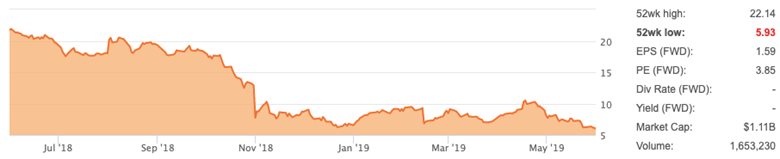
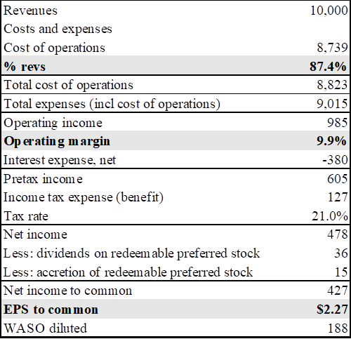

Company: McDermott International, Inc.
Symbol: MDR
Analysis Date: 4/30/19 – UPDATE: 5/31/19
Analysis Price: $6.00
Price Target (PT): $18.18
Upside: 203%
Dividend: NA
Recommendation: Strong Buy
MDR: 1-Year Chart

Source: Seeking Alpha
INVESTMENT THESIS:
MDR’s 1Q19 results saw no new changes in cost estimates for legacy CBI projects. In addition, the backlog continues to grow nicely, and the $475M in annual savings from the merger synergies have all been actioned and will be fully realized in 2020. However, this good news was overshadowed by an increase in cash usage for 2019 due to higher integration, restructuring, and divestiture costs, delayed initiation of LNG production at the Cameron facility, and delayed receipt of an advanced payment for an expected mega-project award. The long-term upside remains unchanged, and this is a buying opportunity.
MDR: Changes In Cost Estimates For Legacy CBI Projects ($M)

Source: Elle Investments, MDR earnings
LIQUIDITY POSITION: Fair
As of 1Q19, MDR had cash and cash equivalents of $413M. Of this amount, $142M is held within their variable interest entities (VIEs) associated with their joint ventures, and is usually only available for use when distributed to the joint ventures. They also have $714 in available credit, giving them total available liquidity of $1.1B.
While management did not reveal any new changes in estimates to the legacy CBI projects during 1Q19 earnings, they did significantly lower both CFO and FCF guidance for 2019 (CFO is now expected to be ($310M) vs ($75M) prior, and FCF is expected to be ($470M) vs ($240M) prior). The higher cash usage is due to several factors, including:
The timing of an expected award for a megaproject, as the advanced payment will now not be received until 2020.
Cashflow for the Freeport and Cameron projects had been expected to be $21M and ($442M), respectively, but are now expected to be ($33M) and ($455M), respectively. The large downward revision for Freeport is due largely to the timing of milestone payments. Additionally, initial liquid natural gas (LNG) production at the Cameron facility for Trains 2 and 3 has been pushed back a bit, from 4Q19 and 1Q20 to 1Q20 and 2Q20.
The restructuring and integration costs will now be $120M vs $45M prior. And the ongoing sale of the non-core tank and US pipe segments (expected to close by 3Q19 and 2Q19, respectively) will cost $20M, bringing the total cost for restructuring, integration, and divestitures now equal to $140M vs $45M prior.
The $475M in synergies will not be fully realized until into 2020, whereas previous guidance had said that they would be fully realized by the end of 2019.
Given their already high debt load and the extra costs incurred this year from the changes in estimates, the increased cash usage is a concern.
However, it’s worth keeping in mind that the guidance does not take into account the planned divestitures of the storage tank business and US pipe fabrication business, which together are expected to bring in proceeds of $1B (expected to close during 3Q19 and 2Q19, respectively).
While we understand the market’s negative reaction to the decrease in the cashflow guidance, it does not change our long-term thinking. This is simply a cash usage timing issue which can be dealt with through the available credit facility and cash on hand. While another round of dilution is a possibility, we peg the probability at less than 50%.
COMMERCIAL PROSPECTS: Excellent
It’s unfortunate that the good news from 1Q19 earnings was overshadowed by the increased cash usage guidance for the remainder of the year. But putting the worry over a short-term liquidity crunch aside, we see the rest of the earnings results as a validation of the long-term thesis playing out.
The logic behind the much-maligned merger with CBI was that the combined company would be a global and “fully vertically integrated onshore-offshore company, with a broad engineering, procurement, construction and installation (EPCI) service offering." According to management, customers were increasingly seeking a single company that can offer end-to-end solutions for large-scale energy infrastructure projects.
The record backlog through 1Q19 shows early signs of validating this—at $15.4B, it’s now 20% higher than the combined backlogs of the two companies prior to the merger. The revenue opportunity pipeline at $91.1B offers plenty more project awards (particularly in the booming LNG space) for MDR to win.
Looking towards 2020 and beyond, we see very healthy earnings for MDR. The restructuring, integration, and divestiture costs will all be over with, and the $475M in synergies from the merger (which have all been actioned as of 1Q19) will significantly improve cashflow. Our assumptions for computing EPS for 2020 and beyond, along with out PT, are as follows:
Revenue $10B
Cost of operations (as % of revenues) 87.4%
Cost savings $475M ($365M from cost of operations, $110M from SGA)
Operating margin 9.9%
Interest expense $380M (As this continues to be management’s guidance for 2019, we continue to use this figure, though it will likely change a bit once the divestiture proceeds are received.)
Diluted shares 188M
Target P/E 8x
MDR: EPS Estimate For 2020 And Beyond ($M)
Source: Elle Investments
MDR: Price Target

Source: Elle Investments, Yahoo Finance
CONCLUSION:
We continue to remain very bullish on MDR even after the reaction to 1Q19 earnings, and think the very low forward P/E indicates that it has been too overly-punished. Unfortunately, the short-term increase in cash usage has overshadowed the fact that the legacy CBI projects are almost complete (with no new changes to cost estimates), the synergies from the merger are slowly being realized, and the new contract awards continue to roll in and are boosting the backlog to record highs. This is a strong buy.
GLOSSARY:
EPCI: engineering, procurement, construction and installation
LNG: liquid natural gas
VIE: variable interest entities
Note: Additional commentary from Elle Investments can be found at http://elle-investments.com. We welcome your feedback. Additionally, we are thinking of launching a subscription service that would offer early access to our research, along with some other features that investors might find useful (i.e. general portfolio management strategies, live blog updates highlighting our reaction to breaking news, etc.). If you would be interested in subscribing to such a service, please let us know.
Published By: Elle Investments Research Team
Phone: (914) 715-8066
Email: info@elle-investments.com
Disclaimer: The Elle Investments portfolio is managed utilizing a “quantamental” approach where each position, while based on Fundamental Analysis, is sized as part of a larger quantitative portfolio. The commentary presented here is for research purposes only and is not to be taken as investment advice. Readers are expected to perform their own due diligence and/or hire an investment professional prior to entering/exiting positions. Published research ideas are related to the specific market price and publicly available information at the time of research submission/publication. Elle Investments will enter/exit positions without notice.